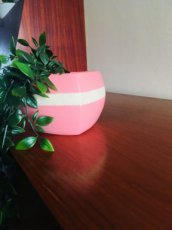
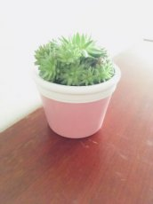

Decoratie
Plantenpotje in beige en roze, met de hand geverfd en vernist. Een vrolijke noot in elke interieur.
Prijs: 8 euro
Decoratie
Vrolijk okergeel plantenpotje. Zelf met de hand geverfd en vernist. Brengt meteen kleur in huis.
Prijs : 5 euro
Decoratie
Plezierig plantenpotje, handgeverfd in wit en roze en afgewerkt met een laag vernis. Fleurt meteen de hele kamer op.
Prijs: 8 euro